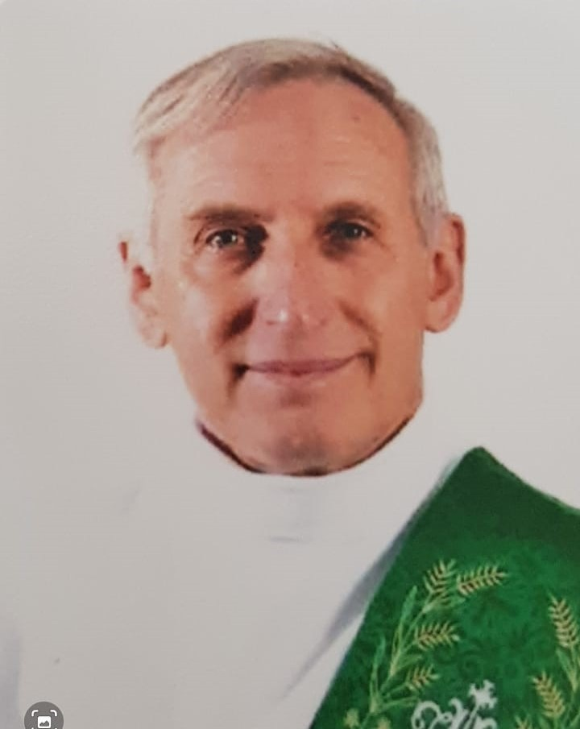
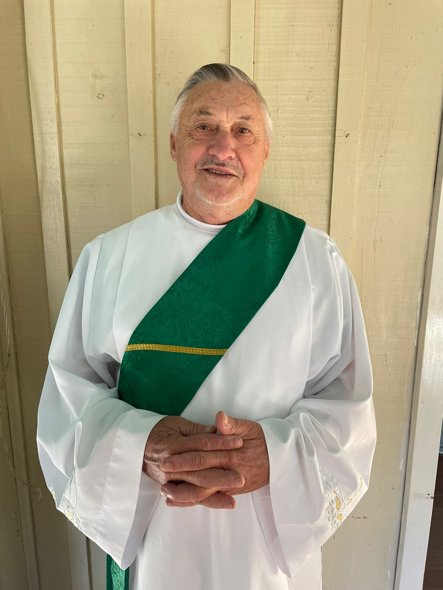

Galerias
Esta seção se destina a apresentar a relação daquelas pessoas que são funcamentais para o funcionamento da Paróquia, bem como as estruturas pelas quais ela é responsável pela manutenção.
Relação de Padres da nossa Paróquia
- 1º - Pe. Agostinho Rutkoski
(24/02/1978 – 17/01/1980) - 2º - Pe. Pedro Grzelczaki
(17/01/1980 – 23/03/1990) - 3º - Pe. Amadeu Fracaro
(23/03/1990 – 24/11/1991) 
4º - Pe. Abrão Becker
(24/11/1991 – 04/05/1995)- 5º - Pe. Casemiro Przepiura
(04/05/1995 – 17/12/1998) - 6º - Pe. Silvio Mocelin
(17/12/1998 – 18/01/2001) - 7º - Pe. Moacir Gomes
(18/01/2001 – 25/09/2002) - 8º - Pe. Luiz Carlos Mirkoski
(25/09/2002 – 18/12/2003) - 9ª - Pe.José Lauro G. Gomes
(18/12/2003 – 05/02/2005) - 10º - Pe. Marcelo Melo
(05/02/2005) - 11º - Pe. Marcelo Melo
(05/02/2005 - 27/01/2013) - 12º - Pe. Nelson Bueno da Silva
(01/02/2013 - 28/02/2022) - 13º - Pe. Daniel Farago
(06/03/2022 - 04/04/2022) - 14º - Pe. Jose Nilson Santos
(04/04/2022 - atualmente)
Relação de Vigários de nossa Paróquia
- Padre Alexandre (Ano .......)
- Padre José Lauro (ano.....)
Relação de Diáconos de nossa Paróquia
- Adenilson Batista
Eduardo Sedoski- 
Nelson Poncoski Penteado - 
Pedro Ricardo Basílio - Theodoro Schreider Filho

Padres ordenados em nossa Paróquia
- Padre Athanagildo (ano)
- Padre Celso (ex) (ano)
- Padre Cristiano (ano)
- Padre Elcio
- Padre Ezequiel Hul
- Padre Ivan
- Padre José Bacheladenski
- Padre Leonel
- Padre Mário Dwulaka
- Dom Mário Spaki
- Padre Moacir
- Padre Paulo (ex)
Religiosas de nossa Paróquia
- Irmã Josefa Helena - Cerro da Ponte Alta
- Irmã Mônica Specht - Canhadão
- Irmã Jocélia Chuproski - Rio Bonito
Relação de Capelas pertencentes à nossa Paróquia
- Capela São Pedro e São Paulo - Alvorada
- Nossa Senhora Aparecida e Santos Inocentes - Alto da Lagoa
- Capela Santo Antonio
Cachoeira do Palmital - Capela São Sebastião
Cadeadinho - Capela Nossa Senhora Sant'Ana
Cadeado SantAna - Capela Mãe da Divina Graça
Campina de Gonçalves Junior - Capela Nossa Senhora de Fátima
Canhadão - Capela Santíssima Trindade
Caratuva I - Capela Santa Cruz
Caratuva II - Capela Senhor Bom Jesus
Cerro da Ponte Alta - Capela Nossa Senhora da Luz
Faxinal do Rio do Couro - Capela São Francisco
Faxinal dos Mellos - Capela Imaculado Coração de Maria
Itapará - Capela Santo Estanislau
Gonçalves Júnior - Capela Nossa Senhora Aparecida
Linha Pinho - Capela São Braz
Mato Queimado - Capela Santa Terezinha
Pedreira - Capela Nossa Senhora das Graças
Pinho de Cima - Capela São Sebastião
Rio do Couro - Capela Nossa Senhora Aparecida
Volta Grande